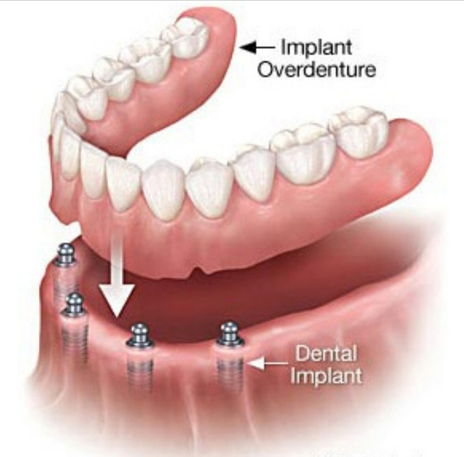

The mouth is referred to as a mirror of overall health, reinforcing that oral health is an integral part of general health.
Geriatric (old age) patients face many oral health challenges which are sometimes complicated by their underlying medical conditions, use of medications and limited access to oral health care.
Classifying elderly allows for a more detailed and accurate analysis of the diversity within this age group and makes diagnosis and treatment planning more personalized.
Classification of elderly according to age group:
Five common geriatric dental problems are:
Xerostomia affects 30% of patients older than 65 years and upto 40% of patients older than 80 years; this is primarily an adverse effect of medications, although it can also result from comorbid conditions (more than 1 condition) such as diabetes, Alzheimer’s disease or Parkinson’s disease.
Dry mouth can lead to : mucositis, caries and fissured tongue.
Recommendation: To drink or at least sip regular water throughout the day and limited alcoholic beverages and beverages high in sugar or caffeine such as tea or coffee.
Root surface caries and coronal (crown) caries have increased prevalence in old-age populations. In a study conducted in England, the prevalence of caries in tooth crowns among dentate elderly was 22% with 20% of 75-84 years olds showing active root decay.
Caries is a primary cause of tooth loss among elderly for various reasons: Age related salivary changes, poor diet, and exposure of root surface by gingival recession, drug treatment with xerostomia as a side effect.
Periodontal disease is a generic term encompassing a variety of inflammatory conditions compressing variety of supporting tissues.
17-20% of seniors age 65 years and over have periodontal diseases. Most of the periodontal diseases remain unrecognized as they are asymptomatic and if they remain undiagnosed, they can cause severe bone loss in alveolar process in old age patients.
The increasing prevalence of human papilloma virus (HPV) infection has led to a rapid increase in cancers of Oral cavity and Oropharynx (OC & OP).
OC & OP cancers are most concentrated among older patients with a median age at diagnosis of 62 years. Additionally more than half of approximately 7890 OC&OP cancer deaths in 2012 occurred in patients 65 years and older.
As with most malignant neoplasms, the prognosis for patients with cancers of the OC &OP is based on the extent of tumor and presence of regional or distant metastasis.
Recent evidence indicates that age >65 years is independently associated with poor prognosis among patients with Oropharynx cancer.
Caregivers of these patients must emphasize on the importance of oral health.
This should include:
Toothbrush Selection: An electric powered toothbrush is ideal for geriatric patients as it provides proper oscillating movement of brush head and less effort is needed in comparison to manual toothbrush.
Toothpase selection: Toothpaste that contains fluoride is ideal to be used. Fluoride is very important as it can prevent dental caries and protect and strengthen tooth surface from further decay.
Brushing Frequency: A minimum of two times per day is sufficient to achieve optimum oral hygiene.
Denture care: It is advisable to clean the dentures everyday and to avoid wearing dentures during sleep.
Dental Check-ups: Geriatric patients are advised to visit dental clinics for check-ups once every 3-6 months. Patients with a history of gum problems and implant treatments are advised to have regular check-ups to ensure good long-term outcome.
Diet: Avoid hard food because geriatric patients have low chewing efficiency due to weak masticatory muscles and reduced number of remaining teeth. Acidic and sugary foods to be avoided
Edentulism (complete loss of tooth) seen in older patients can heve severe consequences like:
Decreased width & height of supporting bone
Progressive decrease in keratinised mucosa
Thinning of mucosa, with sensitivity to abrasion
Loss of basal bone
For this purpose, we can use implant supported overdentures in elderly patients.
Advantages of implant supported overdentures: